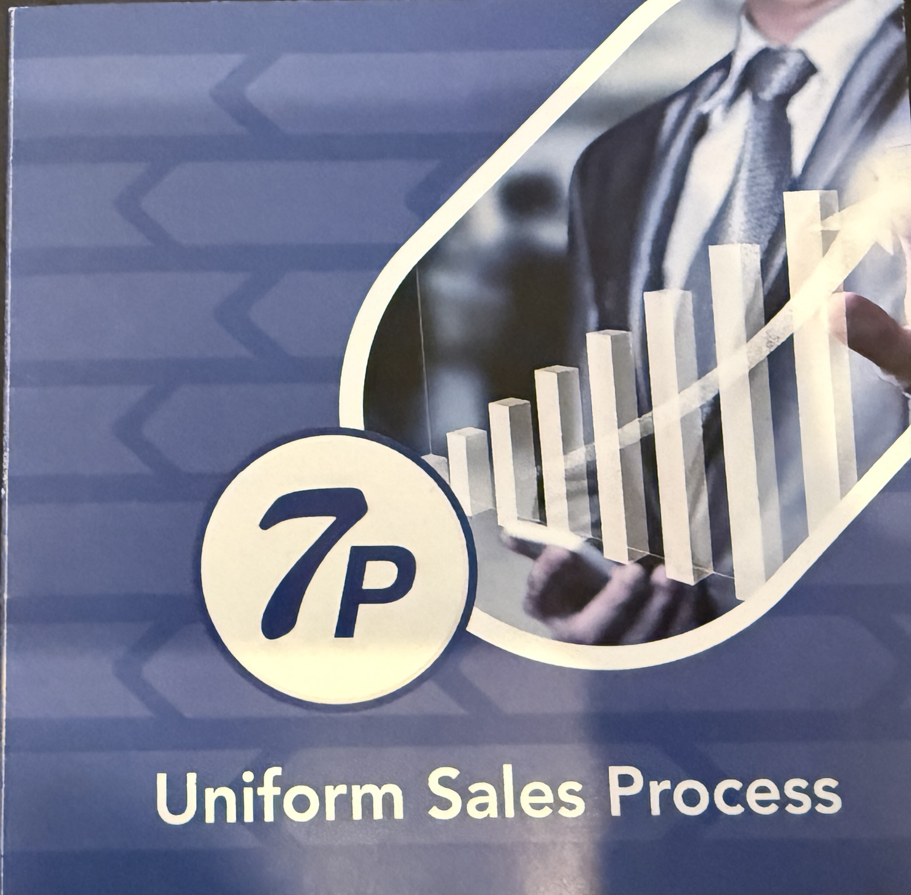

First American Title · Featured work
Turning technology strategy into customer adoption and business growth.
Three connected stories: launching customer-facing technology, enabling more productive sales conversations, and helping employees confidently adopt AI.
The two 650% results measure different initiatives: platform adoption and sales enablement. Results reflect collaborative, cross-functional work.
The leadership story
Connecting strategy, teams, and outcomes.
At First American Title, I led marketing initiatives spanning customer-facing technology, sales enablement, creative development, and internal AI engagement. My focus was translating complex products and business priorities into clear value propositions, practical tools, and measurable customer and employee behaviors.
Case study 01 · Product marketing & GTM
IgniteRE: Bringing five technologies into one customer experience.
Customers needed a simpler way to discover and use real estate technology. The launch required a unified story, coordinated execution, and a plan for adoption—not just awareness.
How I approached the challenge
Strategy and leadership
- Developed customer-focused positioning and launch communications for the unified experience.
- Aligned Product, Sales, technology, and marketing stakeholders around shared launch priorities.
- Used customer feedback, competitive insights, and testing to refine messaging and adoption support.
What changed
The launch generated more than 2,000 sign-ups on day one. Platform usage increased 650% over the following six months, reflecting the combined work of the product and go-to-market teams.
My broader voice-of-customer work helped surface friction points and inform product improvements.

Customer-facing messaging and creative development supporting the product launch and education.
Case study 02 · Commercial growth & sales enablement
Turning technology engagement into better sales conversations.
Technology adoption mattered, but so did its connection to title and escrow business. I helped equip Sales with consistent tools and used engagement insights to identify opportunities for more relevant outreach.
How I approached the challenge
Strategy and execution
- Introduced standardized sales enablement toolkits to make technology-related customer conversations more consistent.
- Analyzed technology usage alongside title and escrow order activity to identify customers who might benefit from targeted engagement.
- Led creative and content teams developing practical resources for established sales processes.
What changed
Technology-related customer and prospect conversations increased 650% after the enablement rollout. In a separate targeted outreach effort, approximately 10% of previously non-producing technology users began sending at least two transactions within six months.
These are program-associated outcomes, not claims that marketing alone caused every transaction.

Branded materials and content supporting the business's existing sales methodology.

Creative resources designed to communicate an established sales process consistently across teams.
The 7P sales methodology was created by the business; my team's role was to translate it into usable, branded materials.
Case study 03 · Employee AI transformation
Making AI useful, approachable, and human-centered.
Employees needed more than general enthusiasm about AI. They needed practical examples, relevant workflows, and guidance they could use confidently in their day-to-day work.
How I approached the challenge
Strategy and execution
- Collaborated with my team on interactive experiences connecting business-unit workflows to ready-to-use prompts.
- Developed quick-start guidance, communications, and learning resources to reduce barriers to experimentation.
- Supported AI Champions and internal engagement efforts that emphasized human judgment and useful outcomes.
What this demonstrates
Experience leading employee-facing AI communications and change enablement: making unfamiliar capabilities understandable, relevant, and easier to adopt.
This was internal AI engagement—not a claim of selling external AI products or owning a quantified enterprise-wide adoption result.
The bigger picture
Strategy is only valuable when it changes outcomes.
Across product launches, sales enablement, and AI engagement, my work has focused on connecting business goals with experiences people can understand and use.
← Explore more featured work